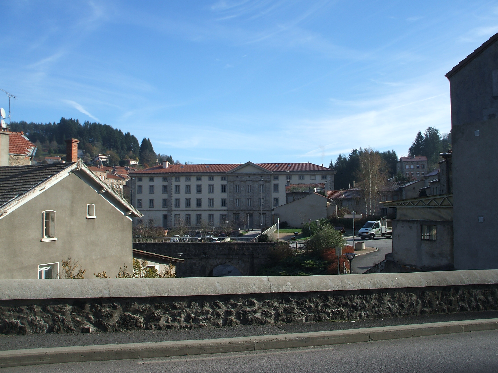
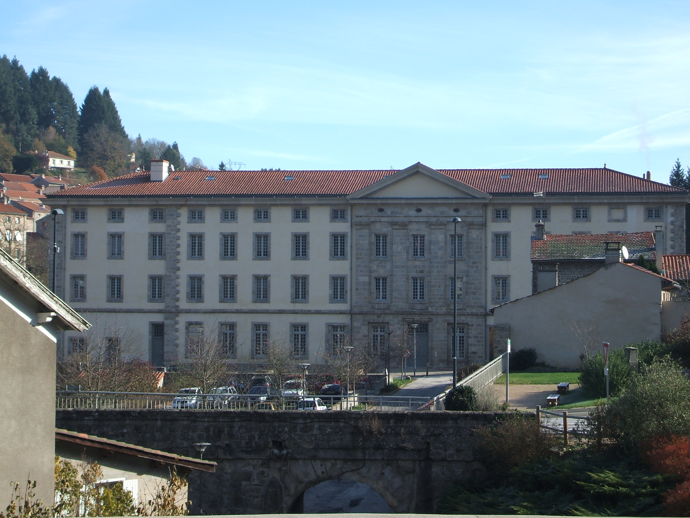
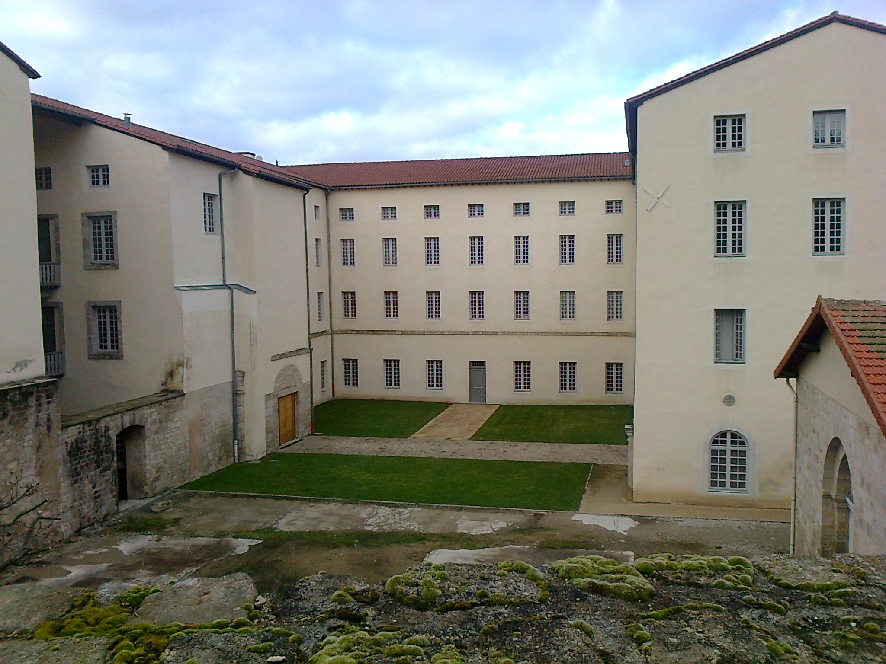
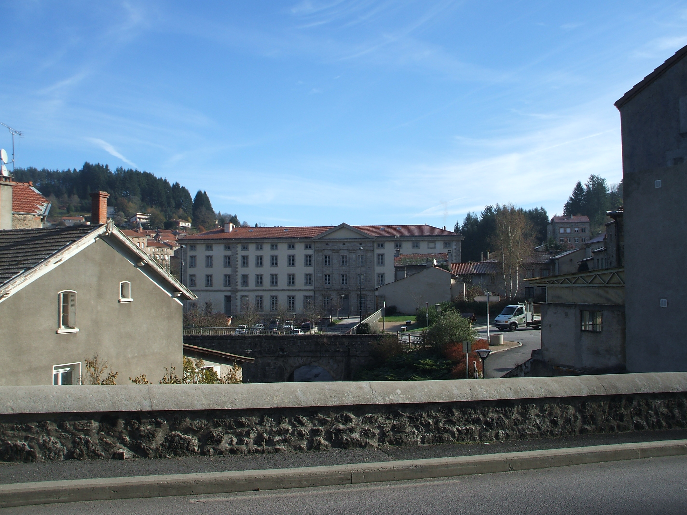
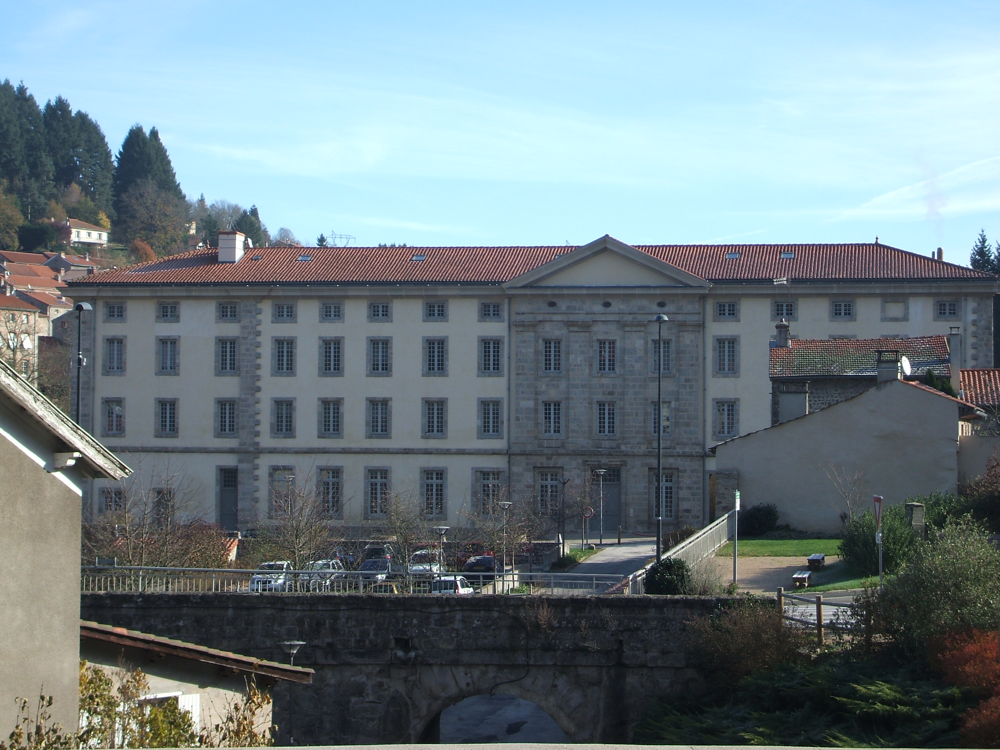
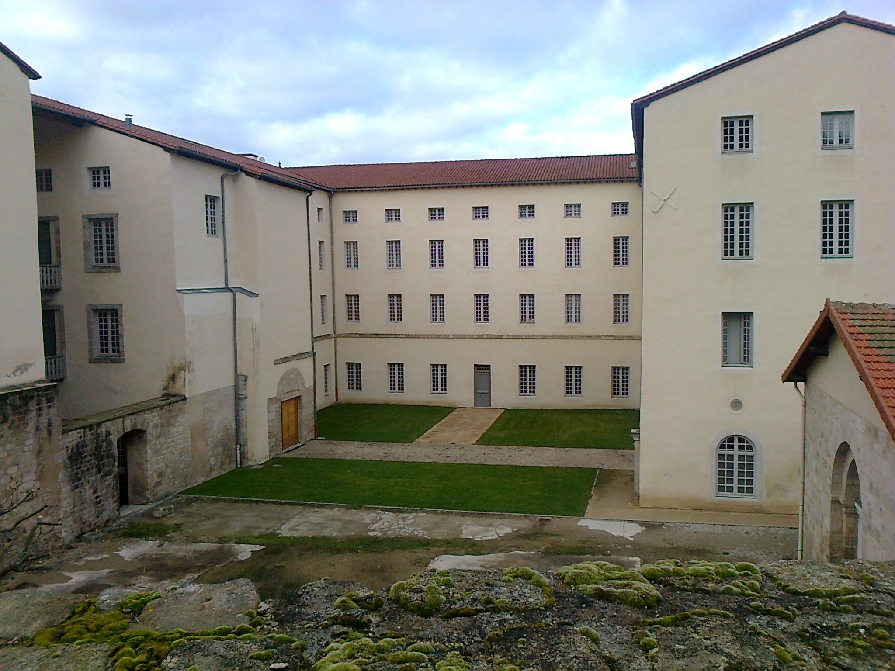

L'immeuble 🏫
Description
L’abbaye cistercienne de la Séauve est un immeuble inscrit à l’inventaire des monuments historiques.
L’immeuble a été construit en 1200 environ.
Il a été entièrement restauré au début des années 2000. Il comprend 47 appartements sur 3 étages, le rez-de-chaussée étant occupé par le siège de la communauté de communes « Loire Semène ».
L’immeuble comprend plusieurs entrées et deux ascenseurs.
Il possède également deux parkings colectifs et un local à vélo fermé, dont seuls les occupants peuvent accéder.
Il se situe en bord de rivière, près du plan d’eau (et du parc accrobranche) tout en étant proche du centre du village et de ses principaux commerces.
Abbaye de la Sauve-Bénite — Wikipédia (wikipedia.org) open_in_new
 




